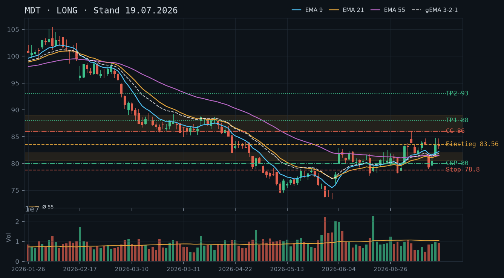
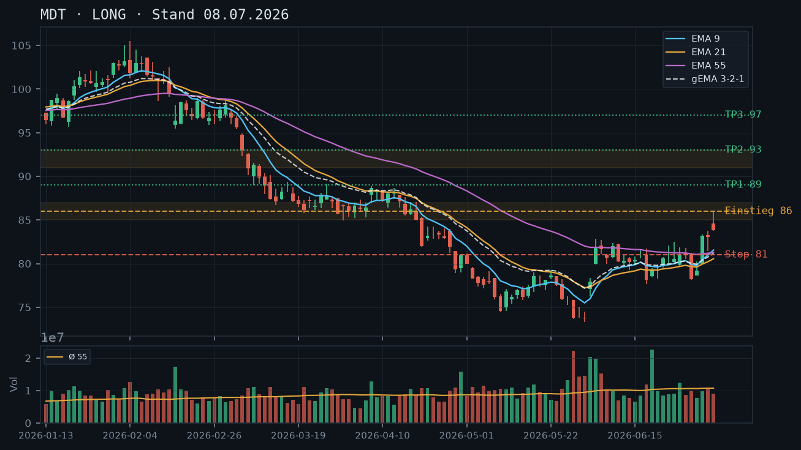

MDT
Analyse-Historie · neueste zuerstMDT pausiert nach der Juli-Rallye in einer engen Konsolidierung knapp unter dem 82er-Niveau – kein neues Setup, aber der Covered Call auf den 85er oder 86er Strike bleibt das klare Stillhalter-Instrument für die bestehende Long-Aktienposition.

1 · Trendstruktur
MDT hat im Zeitraum 03.–04. Juni mit dem Gap-up von ~74 auf ~82 einen scharfen Trendwechsel vollzogen, der durch hohes Volumen (rel. 2,10 und 2,00) bestätigt wurde. Seitdem läuft die Aktie in einer Konsolidierung zwischen grob 79 und 84 USD. Das letzte signifikante Swing-Hoch liegt bei 85,99 (07.07.), das letzte Swing-Low bei 78,97 (14.07.). Die Struktur zeigt höhere Tiefs (78,97 > 78,14 vom 30.06.), was eine intakte Aufwärtsstruktur im kurzen Zeitrahmen signalisiert – aber das Hoch bei 85,99 wurde bisher nicht überboten, sodass noch kein bestätigter Higher-High-Trend vorliegt.
2 · Candlestick-Formationen
Die letzten drei Kerzen (20./21./22.07.) zeigen kleine Körper mit abnehmender Range und fallendem Volumen (rel. 0,69 / 0,57 / 0,46 – deutlich unter dem 55er-Schnitt). Das ist klassisches Kompressionsverhalten nach einer Aufwärtsbewegung. Die Kerze vom 22.07. schließt bei 81,89 leicht unter dem Vortag – ein minimales Distribution-Signal, aber kein Breakdown. Dominante Kerzen fehlen in beide Richtungen.
3 · EMA-Lage (9 / 21 / 55)
EMA9 (82,31) liegt knapp über EMA21 (81,73), EMA55 (81,64) befindet sich direkt darunter – alle drei EMAs komprimieren in einem engen Band um 81,64–82,31. Der gema_321 (82,00) liegt nahezu auf Schlusskurs-Niveau (81,89), was Neutralität signalisiert: weder bullisher noch bearisher EMA-Verbund. EMA9 hat in den letzten Tagen leicht gedreht (von 82,48 am 13.07. auf 82,31), was die Pause bestätigt. Die Konstellation EMA9 > EMA21 > EMA55 ist technisch bullish, aber der enge Abstand (unter 0,70 USD gesamt) macht dies zum Kompressions-Artefakt ohne Signalwert.
4 · Trade-Setup
| Richtung | Kein Trade |
| Einstieg | Kein aktives Setup – abwarten auf Breakout über 85,99 oder Rücksetzer in die 80,00–81,00er Support-Zone |
| Stop | n/a |
| Ziel | n/a |
| CRV | n/a |
5 · Stillhalter (max. 12 Tage)
Der Markt ist in einer Kompressionsphase ohne klares Momentum. Ein neuer CSP ist bei laufender Long-Equity-Position und fehlender Richtungsdynamik nicht empfehlenswert. Der Covered Call ist das naheliegende Instrument: Die bestehenden 200 Aktien erlauben zwei Kontrakte, und das ungelöste Widerstands-Cluster um 85–86 USD bietet einen technisch sauberen Strike. Prämie-Einnahme in einer seitwärts tendierenden Phase mit Kompressions-Kerzen ist der klassische Anwendungsfall für Stillhalter.
| Geschäft | Covered Call |
| Strike | 85.0 |
| Puffer | 3.7 % |
| Zone | Juli-Swing-Hoch 85,99 (07.07.) als Widerstand – Strike 85,00 liegt knapp darunter mit dem Hoch als Puffer vor einer möglichen Andienung |
| Verfall bis | 2026-08-01 (9 Tage) |
| Begründung | Strike 85,00 liegt rund 3,7% über dem aktuellen Kurs (81,93) und knapp unterhalb des Juli-Hochs bei 85,99, das bisher einmalig getestet wurde (unbestätigter Widerstand, aber markantes Level). Eine Abgabe der Aktien zu 85,00 USD wäre aus Portfoliosicht akzeptabel – der Einstand dürfte deutlich tiefer liegen, und 85,00 entspricht einem soliden Buchgewinn. Alternativ kann Strike 86,00 gewählt werden (4,9% Puffer), wenn die Prämie noch vertretbar ist, um das Swing-Hoch vollständig als Puffer zu nutzen. In der Optionskette prüfen: Delta sollte bei +0,25 bis +0,35 liegen, Prämie idealerweise 0,40–0,70 USD (Mid), Bid-Ask-Spread eng genug für Limit-Order in der Mitte. |
Bestand: Laut IBKR-Snapshot (23.07., 11:36 Uhr) besteht eine Long-Aktienposition, keine offenen Optionen. Es sind somit zwei Covered-Call-Kontrakte möglich. Empfehlung: CC auf den 85,00er Strike (Verfall 01.08.) zu Marktöffnung platzieren – Limit-Order zum Mid des Bid-Ask-Spreads. Roll-Trigger: Steigt MDT über 84,50 mit Volumen deutlich über dem 55er-Schnitt, Überlegung ob Roll auf 86,00er Strike oder auf späteren Verfall sinnvoll ist. Verfall-Trigger: Liegt der CC am letzten Handelstag mehr als 80% im Gewinn, frühzeitig schließen und ggf. neu verkaufen.
Ausführliche Analyse vom 23.07.2026 anzeigen
MDT – Analyse 23. Juli 2026
1. Trendstruktur & Abgleich mit früheren Analysen
Die Analyse vom 08.07. hatte einen Long-Einstieg bei 86,00 auf Stop-Buy-Basis empfohlen – dieses Level wurde nie erreicht. Das Swing-Hoch vom 07.07. bei 85,99 markiert seitdem den ungebrochenen Widerstand. Die Analyse vom 19.07. sah MDT bei ~83,60 mit intakter Aufwärtsstruktur. Beide Analysen werden durch die Kursdaten im Kern bestätigt: Die Struktur höherer Tiefs ist intakt (Swing-Lows: 78,14 am 30.06. → 78,97 am 14.07.), aber das entscheidende höhere Hoch über 85,99 fehlt weiterhin. MDT hat sich von ~73,67 (Intraday-Tief 29.05.) erholt und befindet sich nun in einer Akkumulationszone zwischen 79 und 86 USD. Das Gap-up am 03.06. (Close 77,95) und am 04.06. (Close 81,93) mit rel. Volumen von 2,10 und 2,00 war der katalytische Event – vermutlich News-getrieben. Dieser Bereich (79–82 USD) fungiert nun als Support-Cluster, da der Kurs seitdem mehrfach in ihn zurückgekehrt und wieder nach oben abgeprallt ist.
Wichtige Kursmarken im Überblick:
- 85,99 – Juli-Swing-Hoch (07.07.), unbestätigter Widerstand, einmaliger Test
- 84,69 – Lokales Hoch 17.07.
- 82,00–82,50 – EMA-Cluster (aktueller Kompressionspunkt)
- 80,00–81,00 – Support-Zone, mehrfach getestet (30.06., 01.07., 14.07., 15.07.)
- 78,97 – letztes bestätigtes Swing-Low (14.07.), kritischer Haltepunkt für die Aufwärtsstruktur
- 73,67 – zyklisches Tief (29.05., rel. Volumen 2,40 – Kapitulations-Signal)
2. Candlestick-Analyse
Die Kerzen der letzten fünf Handelstage (17.–22.07.) zeigen einen klaren Rückgang der Handelsdynamik: Die täglichen Ranges schrumpfen, Volumina liegen deutlich unter dem 55er-Schnitt (rel. 0,88 / 0,69 / 0,57 / 0,46). Das ist kein Verkaufsdruck, sondern eher Desinteresse bzw. Sommer-Illiquidität. Die Kerze vom 22.07. (Close 81,89, Open 82,96) ist ein schwacher bearisher Outside-Impuls – der Close liegt unter Open, aber die absolute Differenz ist gering. Kein Reversal-Signal, kein Continuation-Signal. Die Kompressionsphase kann in beide Richtungen aufgelöst werden.
3. EMA-Analyse
EMA9 = 82,31 / EMA21 = 81,73 / EMA55 = 81,64 / gema_321 = 82,00. Die Differenz zwischen schnellstem und langsamstem EMA beträgt nur 0,67 USD – das ist extrem eng für eine Aktie im 80er-Bereich (unter 1%). Dieser Zustand ist ein klassisches Kompressions-Artefakt: Die kurzfristige Dynamik (EMA9) hat die langfristigere Durchschnittslage (EMA55) beinahe eingeholt, was eine bevorstehende Entscheidungsphase ankündigt. Historisch relevant: Am 08.07. lagen EMA9 (81,55), EMA21 (80,55) und EMA55 (81,28) ebenfalls eng beieinander – danach folgte der Anstieg auf 85,99. Eine Wiederholung ist möglich, aber nicht garantiert.
4. Directionaler Trade – Alternative Setups
Da kein dominantes Signal vorliegt, werden drei Szenarien skizziert:
- Setup A – Breakout Long: Stop-Buy bei 86,10 (über 85,99-Hoch), Stop 82,00 (EMA-Cluster), Ziel 1: 88,50 (April-Zone), CRV ca. 0,9:1 auf Ziel 1. Ziel 2: 93,00, CRV ca. 1,7:1. Setup nur attraktiv bei Ausbruch mit rel. Volumen > 1,3. Aktuell kein Einstieg.
- Setup B – Pullback Long: Limit-Buy bei 80,50 (obere Kante der Support-Zone), Stop 78,80 (unter Swing-Low 14.07.), Ziel 85,99, CRV ca. 2,4:1. Setzt voraus, dass der Kurs in die Zone zurückläuft ohne sie zu brechen.
- Setup C – Breakdown Short: Stop-Sell bei 78,80 (unter Swing-Low), Ziel 74,00 (Retest des Juni-Tiefs), Stop 81,50. CRV ca. 1,8:1. Widerspricht der Long-Equity-Position und ist daher nicht empfohlen.
Bevorzugtes Setup: keins aktiv – abwarten. Setup A oder B je nach Kursreaktion.
5. Stillhalter-Analyse (Schwerpunkt)
Covered Call – Strike 85,00, Verfall 01.08.2026
Zonen-Herleitung: Das Juli-Swing-Hoch bei 85,99 (07.07.) ist der nächste relevante technische Widerstand. Er wurde einmalig erreicht, aber nicht überboten – damit ein unbestätigter, aber markanter Widerstand. Der Strike 85,00 liegt 0,99 USD unter diesem Hoch, d.h. der Kurs muss erst das bisherige Hoch überwinden, bevor der CC in den Gewinn des Käufers läuft. Zum aktuellen Kurs (81,93) beträgt der Puffer 3,7%, was für einen 9-Tages-CC in einem konsolidierenden Markt mit niedriger Volatilität (Kerzen-Range schrumpft) als ausreichend einzustufen ist.
Alternative Strike 86,00: Bietet 4,9% Puffer und legt das Swing-Hoch als zusätzlichen Widerstand vollständig vor die Andienung. Die Prämie wird geringer sein – in der Optionskette prüfen, ob sie noch mindestens 0,30 USD (Mid) beträgt. Empfehlung: Wenn die 85er-Prämie über 0,50 USD liegt, ist dieser Strike vorzuziehen. Wenn nicht, auf 86er ausweichen.
Andienungsszenario: Eine Abgabe der Aktien zu 85,00 USD wäre bei einer Long-Basis, die vermutlich deutlich unter dem aktuellen Kurs liegt, ein solider Buchgewinn. Sollte der Kurs tatsächlich über 85,99 ausbrechen (Breakout-Szenario A), wäre der CC eine Renditebremse – dann wäre ein frühzeitiges Schließen oder Rollen auf den 88,00er Strike bei Ausbruchs-Momentum die logische Reaktion.
Roll-Trigger: Steigt MDT am 28.07. oder später über 84,50 mit rel. Volumen > 1,2, CC schließen (Buy-to-Close) und auf 86,00er Strike / Verfall 08.08. rollen. Fällt MDT unter 80,00 (Support-Bruch), CC belassen und den Prämienverfall genießen – er schützt die Position partiell nach unten.
CSP-Begründung für null: Ein CSP würde bei laufender Long-Equity-Position (200 Aktien) die Gesamt-Exposition auf MDT weiter erhöhen. Die Support-Zone (80–81 USD) ist mehrfach bestätigt, aber die Kompressionsphase ohne klares Momentum rechtfertigt keine Erhöhung des Risikos. Ein CSP auf 79,00 oder 78,00 wäre bei einem deutlichen Rücksetzer mit Volumen (Setup B, Einstieg 80,50) überlegenswert, um eine zusätzliche Aktienposition bei einem technisch sinnvollen Niveau zu eröffnen – aber nicht heute.
Snapshot-Einschränkung: Der IBKR-Snapshot stammt von 11:36 Uhr am 23.07. – Optionsdaten (Prämien, Griechen, Open Interest) liegen nicht vor. Die Kette für den 85er CC (Verfall 01.08.) ist manuell zu prüfen. Mindestanforderung: Prämie > 0,35 USD, Delta < +0,30, enger Bid-Ask-Spread (< 0,15 USD).
MDT hält die Aufwärtsstruktur aus der Juli-Rallye – EMA-Verbund dreht bullish, die 80–82er Support-Zone bleibt intakt, Covered Calls oberhalb 85/86 sind das primäre Stillhalter-Instrument.

1 · Trendstruktur
MDT hat nach dem Tief bei ~73,67 (29.05.) eine klare Erholung vollzogen: Higher Lows bei 78,14 (17.06.), 79,27 (22.06.) und 79,30 (14.07.) formen eine intakte Aufwärtsstruktur. Das Juli-Swing-Hoch liegt bei 85,99 (07.07.), das aktuelle Close bei 83,20 (17.07.) bleibt moderat darunter. Die Zone 80,50–82,00 hat sich als belastbare Support-Basis mit mehrfachen Tests bewährt (30.06., 01.07., 14.-15.07.).
2 · Candlestick-Formationen
Die letzte Woche zeigt ein Mixed-Bild: Nach dem Einbruch auf 79,30 am 14.07. folgte ein Recovery-Push mit einer starken Aufwärtskerze am 16.07. (Low 81,19, Close 83,56, Range +3,60 USD) – bullishes Signal. Die Kerze vom 17.07. ist ein kleiner Doji/Inside-Bar (High 84,69, Close 83,20), was kurzfristige Konsolidierung signalisiert. Kein Trendumkehrmuster erkennbar, Momentum intakt aber vorübergehend erschöpft.
3 · EMA-Lage (9 / 21 / 55)
EMA-Lage per 17.07.: EMA9 82,21 – EMA21 81,49 – EMA55 81,54. Bemerkenswert: EMA55 liegt knapp unter EMA21 (81,54 vs. 81,49) – das ist ein Kompressions-Artefakt aus dem langen Seitwärts-/Abwärtsdruck, kein echtes Kaufsignal per se. Der gema_321 steht bei 81,86 – der Kurs (83,20) handelt bereits spürbar oberhalb des gesamten EMA-Verbunds, was die laufende Aufwärtsdynamik unterstreicht. EMA9 hat EMA21 und EMA55 von unten gekreuzt (bullisher Verbund), erstmals seit dem Frühjahrstrend.
4 · Trade-Setup
| Richtung | Long |
| Einstieg | 83,60 (aktuelles Niveau, Pullback-Einstieg alternativ bei 81,50–82,00) |
| Stop | 78,80 (unter Swing-Low 14.07. und Support-Zone) |
| Ziel | 88,50 (April-Widerstandszone) / 93,00 (Ziel aus Analyse 08.07.) |
| CRV | 2.1 : 1 (auf Ziel 88,50) |
5 · Stillhalter (max. 12 Tage)
Mit 200 Aktien im Bestand sind Covered Calls die logische Stillhalter-Strategie – zwei Kontrakte oberhalb des Juli-Hochs von 85,99 generieren Prämie ohne die Long-Equity-Position zu gefährden. Ein CSP ist bei laufender Long-Equity-Position und positiver Trendstruktur sekundär, aber bei tieferem Pullback in die 80–81er Zone denkbar.
| Geschäft | Cash-Secured Put |
| Strike | 80.0 |
| Puffer | 4.3 % |
| Zone | Support-Zone 80,50–82,00 (mehrfach getestet 30.06.–15.07.) liegt als Puffer vor dem Strike |
| Verfall bis | 2026-07-25 (6 Tage) |
| Begründung | Strike 80,00 liegt klar unterhalb der vielfach bestätigten Support-Zone 80,50–82,00. Andienung bei 80,00 wäre bei bestehender Long-Equity-Überzeugung akzeptabel – allerdings erhöht ein zusätzlicher CSP die Aktien-Exposition weiter. Nur sinnvoll, wenn der Anwender die Position ausbauen möchte. In der Optionskette prüfen: Prämie sollte mindestens 0,40–0,60 USD betragen, Delta um -0,20 oder tiefer, ausreichend Open Interest im 80er Strike. |
| Geschäft | Covered Call |
| Strike | 86.0 |
| Puffer | 3.4 % |
| Zone | Widerstand Juli-Swing-Hoch 85,99 (07.07.) und April-Konsolidierungszone 86–88 |
| Verfall bis | 2026-07-25 (6 Tage) |
| Begründung | Strike 86,00 liegt direkt an bzw. knapp über dem Juli-Swing-Hoch 85,99 – dieser Bereich ist der nächste relevante Widerstand mit konkretem Test-Datum. Eine Abgabe der Aktien zu 86,00 wäre aus Sicht der Trendstruktur akzeptabel (Buchgewinn aus 80er-Basis), allerdings würde damit Upside-Potenzial Richtung 88,50/93,00 abgeschnitten. Alternative: Strike 87,00 oder 88,00 wählen, falls die Prämie noch vertretbar ist, um mehr Kursspielraum zu behalten. In der Optionskette prüfen: Prämie bei 86er Strike, Delta um +0,30 oder tiefer (OTM), Bid-Ask-Spread und Open Interest. |
Bestand: Laut IBKR-Snapshot besteht eine Long-Aktienposition von 200 Stück, keine offenen Optionen. Es sind somit zwei Covered-Call-Kontrakte à 100 Aktien möglich. Kein Roll-Bedarf, da keine auslaufenden Short-Optionen vorhanden. Empfehlung: CC auf den 86,00er Strike (Verfall 25.07.) verkaufen – bei Anstieg über 85,99 mit Volumen Roll-Überlegung auf August-Verfall oder höheren Strike prüfen.
Ausführliche Analyse vom 19.07.2026 anzeigen
MDT – Detailanalyse 19.07.2026
Abgleich frühere Analyse (08.07.2026)
Die Analyse vom 08.07. empfahl einen Long-Einstieg über 86,00 mit Stop 81,00 und Ziel 93,00 (CRV 2,8:1). Das Setup wurde nur teilweise aktiviert: MDT erreichte am 07.07. ein Hoch von 85,99, brach danach zurück auf 78,97 (14.07.) – der Stop bei 81,00 wäre damit ausgelöst worden. Der Re-Entry-Trigger (Bruch über 86,00) steht weiterhin aus. Die grundsätzliche Trendwende-These wird durch die Chartstruktur aber weiterhin gestützt: Das Tief vom 14.07. bei 78,97 liegt über dem Tief vom 29.05. (73,67) – die Sequenz höherer Tiefs ist intakt.
1. Trendstruktur
MDT hat nach dem Jahrestief bei 73,67 (29.05.2026) mit einem rel_volumen von 2,40x (Panik-Selling-Klimax) eine strukturelle Wende eingeleitet. Der anschließende V-förmige Anstieg bis 85,99 (07.07.) wurde durch Earnings-nahe Volatilität unterbrochen (14.07., Low 78,97). Seither Recovery auf 83,56 (17.07.).
- Support-Zone 1 (primär): 80,50–82,00 – getestet am 30.06. (Low 78,14 intraday, Close 78,23), 01.07. (78,60), 14.07. (78,97), 15.07. (79,46). Achtung: Tagestiefs liefen kurz darunter, aber Closes hielten die Zone. Diese Zone ist bestätigt, aber nicht makellos.
- Support-Zone 2 (sekundär): 73,50–74,50 – Jahrestief-Cluster. Nur relevant als letzter Rückhalt bei Breakdown.
- Widerstand 1: 85,99–86,00 (Juli-Swing-Hoch, unbestätigt als Resistance – erst ein Test).
- Widerstand 2: 88,00–89,00 (April-Konsolidierung, mehrfach relevant März/April).
- Widerstand 3: 93,00 (Ziel aus Voranalyse, März-Hochpunkt).
2. Candlestick-Formationen
Die Kerze vom 16.07. ist die wichtigste der letzten Woche: Open 81,45, High 84,79, Low 81,19, Close 83,56 – eine starke Aufwärtskerze mit langer Body (2,37 USD) bei 0,92x Durchschnittsvolumen. Nicht übermäßig volumenstark, aber strukturell bullish. Die Kerze vom 17.07. zeigt eine komprimierte Range (High 84,69, Close 83,20) – ein Inside-Bar-Charakter, der Konsolidierung vor dem nächsten Zug signalisiert. Kein bearishes Umkehrmuster vorhanden. Der Druck vom 14.07. (rel_volumen 0,82x) war kein High-Volume-Reversal, was auf technische Reaktion statt fundamentalen Selling-Druck hindeutet.
3. EMA-Lage und gema_321
EMA9 (82,21) > EMA21 (81,49) > EMA55 (81,54) – mit der Anomalie, dass EMA55 marginal über EMA21 liegt (81,54 vs. 81,49). Dies ist ein Kompressions-Artefakt: Der lange Abwärtstrend hat EMA55 tief gedrückt, während EMA21 sich bereits erholt hat – beide Werte liegen so eng beieinander, dass die Reihenfolge keine echte Trendaussage liefert. Wichtiger: Der gema_321 bei 81,86 liegt deutlich unter dem aktuellen Kurs (83,20), was zeigt, dass das kurzfristige Momentum den Verbund bereits nach oben überholt hat. Solange Kurs > gema_321 bleibt, ist der Bias bullish. Ein Rückfall unter gema_321 (~81,80) wäre ein Warnsignal.
4. Trade-Setups (Aktie)
Setup A (Momentum-Continuation, bevorzugt): Einstieg bei Bruch über 84,80 (Hoch 17.07.) per Stop-Buy, Stop 79,80 (unter Swing-Low 14.07. mit Puffer), Ziel 1: 88,00 (CRV ~0,65:1 – unattraktiv), Ziel 2: 93,00 (CRV ~1,6:1 – passabel). Nur für bestehende Position als Aufstockung, nicht als Neu-Setup geeignet.
Setup B (Pullback-Long, präferiert für Neueinstieg): Einstieg bei Rücklauf in die Zone 81,50–82,00, Stop 78,80, Ziel 88,00 (CRV ~1,8:1) / 93,00 (CRV ~3,0:1). Dieses Setup bietet das bessere CRV und nutzt die bestätigte Support-Zone als Fundament.
Setup C (Breakdown-Short, nur zur Vollständigkeit): Erst relevant bei Close unter 78,80 mit Volumen. Aktuell kein Short-Setup gerechtfertigt.
5. Stillhalter – Detailanalyse (SCHWERPUNKT)
Ausgangslage
IBKR-Snapshot (12:09 Uhr, 19.07.2026): 200 Aktien Long, keine offenen Optionen. Kurs zum Snapshot-Zeitpunkt: 83,56. Der Snapshot liegt wenige Stunden vor der Analyse – zeitlich repräsentativ, keine wesentliche Einschränkung.
Covered Call – primäres Instrument
Strike 86,00, Verfall 25.07.2026 (6 Tage DTE)
Herleitung: Das Juli-Swing-Hoch bei 85,99 (07.07.) ist der nächste technische Widerstand. Ein Strike direkt an dieser Marke bedeutet: Sollte MDT bis Freitag 25.07. erneut die 86er Marke angreifen, wird Prämie kassiert und die Aktien werden zu einem fairen Wert abgegeben. Der Puffer beträgt 3,4% vom aktuellen Kurs (83,56).
Andienungsszenario: Abgabe zu 86,00 ist akzeptabel – der Kurs ist dort in jüngster Vergangenheit gescheitert, es ist kein offensichtliches FOMO-Niveau. Wer die Aktien langfristig halten möchte, sollte den Strike auf 87,00 oder 88,00 erhöhen – damit steigt der Puffer auf 4,1% bzw. 5,3%, und das Upside-Potenzial der Long-Position bleibt besser erhalten. Prämie wird aber entsprechend geringer.
Roll-Trigger: Nähert sich MDT bis Mittwoch/Donnerstag der 85,50er Marke mit Volumen (>1,2x Schnitt), ist ein Roll auf 88,00er Strike oder August-Verfall zu prüfen, um die Position nicht zu früh abgeben zu müssen. Umgekehrt: Fällt der Kurs auf 81,00 oder darunter, ist der CC wertlos und kann mit Gewinn zurückgekauft oder verfallen gelassen werden.
In der Optionskette prüfen: Prämie sollte bei 6 DTE und ~3,4% OTM mindestens 0,30–0,50 USD (Mid) betragen, um den Aufwand zu rechtfertigen. Delta idealerweise zwischen +0,25 und +0,35. Bid-Ask-Spread unter 0,20 USD für faire Ausführung. Open Interest am 86er Strike prüfen – MDT ist ein liquider Large-Cap, sollte kein Problem sein.
Cash-Secured Put – sekundäres Instrument
Strike 80,00, Verfall 25.07.2026 (6 Tage DTE)
Herleitung: Die Zone 80,50–82,00 hat sich als Support bewährt (multiple Tests). Strike 80,00 liegt unterhalb dieser Zone, der Puffer beträgt 4,3%. Andienung zu 80,00 wäre fundamental akzeptabel – das wäre ein günstiger Aufstockungs-Kurs für eine ohnehin überzeugend bewertete Position. Einschränkung: Mit 200 Aktien im Bestand ist die Gesamtexposition zu bedenken. Der CSP erhöht das Aktien-Engagement weiter – nur sinnvoll bei explizitem Wunsch zur Positionsaufstockung.
In der Optionskette prüfen: Prämie am 80er Put, Delta um -0,15 bis -0,20, Liquidität. Bei zu geringer Prämie (<0,25 USD) lohnt sich das Geschäft in Relation zum gebundenen Kapital nicht.
Gesamteinschätzung Stillhalter
Die Marktstruktur begünstigt klar den Covered Call als alleiniges Instrument dieser Woche. Der CC monetarisiert die Konsolidierung unterhalb des Juli-Hochs, ohne die Long-Aktien-Überzeugung aufzugeben. Der CSP ist optional und nur bei explizitem Aufstockungs-Wunsch sinnvoll. Qualitätsfilter: Kein Geschäft bei zu geringer Prämie oder zu engem Spread eingehen.
MDT dreht nach monatelangem Abwärtstrend nach oben – EMA-Kreuzungen und starke Aufwärtskerzen signalisieren einen möglichen Trendwechsel mit Long-Setup über 86,00.

1 · Trendstruktur
MDT befand sich von Ende Februar bis Ende Mai in einem klar strukturierten Abwärtstrend (Hochs: ~97, ~93, ~89, ~82; Tiefs: ~95, ~90, ~87, ~74,4). Das Tief vom 11. Mai bei 74,40 markiert bisher den Tiefpunkt. Seit Anfang Juni bildet die Aktie höhere Tiefs und höhere Hochs (74,40 → 77,62 → 78,14 → 80,56) und die letzten Kerzen zeigen ein Ausbruchsmuster nach oben mit dem aktuellen Kurs bei 83,83. Ein signifikanter Widerstandsbereich liegt bei 85–87 (ehemaliger Support April).
2 · Candlestick-Formationen
Am 02. Juli erschien eine starke Aufwärtskerze (+3,99 auf 83,19), die die Struktur brach. Am 06./07. Juli folgten zwei bullische Kerzen (83,06 / 83,83) mit höheren Tiefs – ein klassisches Continuation-Muster. Das Tageshoch vom 07. Juli bei 85,99 ist ein wichtiger Breakout-Level.
3 · EMA-Lage (9 / 21 / 55)
EMA9 (81,55) hat den EMA21 (80,55) von unten gekreuzt – bullisches Kreuz. EMA55 (81,28) liegt zwischen EMA21 und EMA9, der Kurs notiert klar über allen drei EMAs. Der gema_321 (81,17) steigt erstmals seit Monaten wieder an. Die EMA-Reihenfolge EMA9 > EMA55 > EMA21 normalisiert sich in bullische Richtung (EMA9 > EMA21 > EMA55 in Entstehung).
4 · Trade-Setup
| Richtung | Long |
| Einstieg | 86,00 (Stop-Buy über Widerstandszone / Tageshoch 07.07.) |
| Stop | 81,00 (unter EMA-Cluster und letztem Swing-Low) |
| Ziel | 93,00 (nächster Widerstand April-Zone) |
| CRV | 2.8 : 1 |
Ausführliche Analyse vom 08.07.2026 anzeigen
MDT – Detailanalyse (08.07.2026)
1. Trendstruktur
MDT durchlief von Ende Februar (Hoch ~98,77) bis Mitte Mai einen ausgeprägten Abwärtstrend mit einer Sequenz fallender Hochs und fallender Tiefs. Markante Hochs: 27.02. ~98,06 → 09.03. ~91,54 → 25.03. ~89,18 → 08.04. ~88,84 → 17.04. ~87,05. Markante Tiefs: 12.03. ~87,31 → 20.04. ~81,96 → 29.04. ~78,91 → 11.05. 74,40 (Jahrestief).
Ab Anfang Juni beginnt eine Erholung: Das Tief vom 29.05. (73,67) wurde durch ein massives Reversal am 03.06. (rel. Volumen 2,1x) und 04.06. (rel. Volumen 2,0x) bestätigt. Seither: höhere Tiefs (77,62 am 17.06., 78,14 am 18.06., 78,30 am 22.06., 80,56 am 29.06.) und nun höhere Hochs (83,31 am 02.07., 83,77 am 07.07. – Intraday 85,99).
Wichtige Level: Support: 81,00–81,50 (EMA-Cluster), 78,00–78,50 (ehem. Boden Juni), 74,40 (Jahrestief). Widerstand: 85–87 (April-Support-Cluster), 88–89 (März-Konsolidierung), 91–93 (starke Marke Februar/März).
2. Candlestick-Formationen
Besonders auffällig:
- 29.05.2026: Große rote Kerze mit rel. Volumen 2,4x (22,2 Mio.) – Kapitulationskerze, Tief 73,67. Dies war die Erschöpfungskerze des Abwärtstrends.
- 03.06.–04.06.: Zwei starke bullische Kerzen mit je ~2x Volumen signalisierten das Reversal. Am 04.06. gap-artig von 80,00 auf Hoch 82,83 (+5,3% bei 2,0x Volumen).
- 02.07.2026: Starke bullische Kerze (79,90 → 83,19, +4,1%) mit Breakout über die Konsolidierungszone – Trendfortsetzungssignal.
- 07.07.2026: Kerze mit Hoch 85,99, Schluss 83,83 – Doji-ähnlicher Rückzug nach Test des Widerstands bei 85–86, aber Kerze bleibt grün und über EMA-Cluster.
Die Konsolidierung von Mitte Juni (78–82) wurde sauber nach oben verlassen. Kein bärisches Reversal-Signal in den letzten Kerzen erkennbar.
3. EMA-Lage
Aktuelle EMA-Werte (07.07.): EMA9 = 81,55 | EMA21 = 80,55 | EMA55 = 81,28 | gema_321 = 81,17
EMA9 hat den EMA21 bullisch gekreuzt (goldenes Mini-Kreuz). Bemerkenswert: EMA55 liegt zwischen EMA21 und EMA9, was die noch laufende Trendwende zeigt. Der Kurs (83,83) notiert deutlich oberhalb aller drei EMAs und des gema_321 – eine bullische Ausgangslage, die sich zuletzt in der Mitte März zeigte, dort aber noch im Abwärtstrend war.
Der gema_321 (81,17) dreht zum ersten Mal seit Monaten nach oben. Dies ist ein wichtiges Signal, da der gewichtete EMA-Verbund den kurzfristigen Impuls stärker gewichtet. Die Abstände EMA9 zu EMA55 (0,27 Pkt.) sind noch gering, aber wachsen – ein Zeichen des frühen Aufwärtstrends.
Kritisch: EMA55 ist noch leicht fallend (81,28 vs. 81,19 eine Woche zuvor – minimal). Ein nachhaltiger Aufwärtstrend erfordert, dass EMA55 ebenfalls dreht. Dies wird noch 1–2 Wochen dauern.
4. Trade-Setups
Setup A – Bevorzugt: Breakout-Long über 86,00
- Einstieg: 86,00 (Stop-Buy über die April-Widerstandszone)
- Stop: 81,00 (unter EMA-Cluster EMA9/21/55 und letztem Swing-Low 29.06. bei 78,14 – konservativ über 81,00)
- Ziel 1: 89,00 (März-Konsolidierung) → CRV: 0,6:1
- Ziel 2: 93,00 (Februar-Niveau) → CRV: 2,8:1
- Ziel 3: 97,00 (Jahreshoch-Zone) → CRV: 4,4:1
- Risiko: 5,00 Punkte | Max. Gewinn bis Ziel 2: 7,00 Punkte
Setup B – Aggressiv: Pullback-Long auf EMA-Cluster
- Einstieg: 81,50 (bei Rücksetzer auf EMA9/gema_321)
- Stop: 79,50 (unter dem letzten relevanten Tief vom 30.06.)
- Ziel 1: 86,00 → CRV: 2,25:1
- Ziel 2: 91,00 → CRV: 4,75:1
- Risiko: 2,00 Punkte – sehr attraktiv, aber Einstieg erfordert Geduld
Setup C – Kein Trade / Warten
Falls MDT unter 78,00 fällt, wäre das bullische Szenario hinfällig. In diesem Fall würde das Jahrestief bei 74,40 erneut getestet – dann SHORT mit Ziel 70,00.
Fazit: Das bevorzugte Setup ist A (Breakout über 86,00) mit dem besten Chance/Risiko-Verhältnis auf Sicht von 4–8 Wochen. Das Setup B ist attraktiver im CRV, erfordert aber einen Rücksetzer, der bisher nicht eingetreten ist. Volumenbestätigung beim Breakout über 86,00 wäre wichtig (Zielvolumen: >12 Mio.).